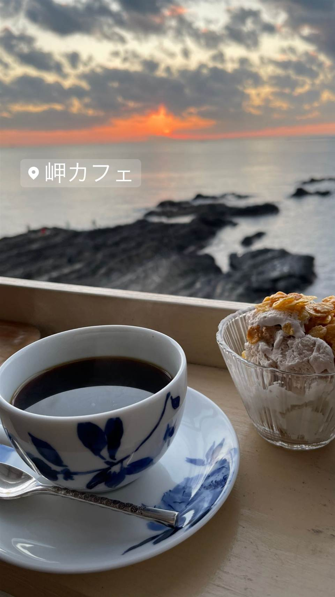

カフェ · コーヒー · 明鐘岬
★ また行きたいコーヒーで23位
音楽と珈琲の店 岬
小説『虹の岬の喫茶店』のモデルになった鋸山ふもとの喫茶店
岬カフェ
WHY GO
鋸山の湧き水でコーヒーを淹れ、その水は店の外に持ち出せない
1978年創業、鋸山のふもとで海と富士山を望む喫茶店。作家・森沢明夫の小説『虹の岬の喫茶店』のモデルとなり、2014年には映画『ふしぎな岬の物語』の舞台にもなった。2011年の火事で焼失したが、常連客らの支えで同年末に再オープンした。

TRIVIA
豆知識
- 小説『虹の岬の喫茶店』はこの店がモデルになっている
- 2014年公開の映画『ふしぎな岬の物語』の撮影地
- 2011年の火事で全焼したが同年12月に再オープンした
REVIEWS
世間の評判
3.48食べログ
圧倒的な海の絶景と落ち着いた雰囲気
- 店内から東京湾を望む絶景とゆったりした雰囲気を高く評価する声が多い
- マグカップの手作り感やピザトースト・チョコケーキなどの軽食を評価する声がある
- 駐車場が分かりにくく細い砂利道を通る必要があるという声が複数ある
- 現金払いのみでキャッシュレス決済に対応していないという声がある
食べログ 口コミ282件
| 創業 | 1978年開業 |
|---|---|
| 看板 | ストレートコーヒー（鋸山の湧き水で淹れるブルーマウンテンなど7種） |
| こだわり | 鋸山の湧き水を使ってコーヒーを淹れている |
| 掲載・評価 | 作家・森沢明夫の小説『虹の岬の喫茶店』のモデルとなり、2014年公開の映画『ふしぎな岬の物語』の舞台・ロケ地になった |
| どこから | 日帰りで行ける遠さ |
| 予算 | 昼 ～¥999 |
| 定休日 | 水曜 |
| 予約 | 予約不可 |
| 場所 | 保田駅 千葉県安房郡鋸南町元名1 |
| メモ | テラス席や大きな窓から海と富士山、夕日を望める |
食べたもの：店内から夕日 / コーヒーと夕日
NEARBY
近い店・同じ系統の店
-
 ★
コーヒー 新宿三丁目
AALIYA COFFEE ROASTERS
37年続く本店譲りのフレンチトーストを並ばず味わえる
昼 ¥1,000～¥1,999 夜 ¥1,000～¥1,999
★
コーヒー 新宿三丁目
AALIYA COFFEE ROASTERS
37年続く本店譲りのフレンチトーストを並ばず味わえる
昼 ¥1,000～¥1,999 夜 ¥1,000～¥1,999
-
 コーヒー 御成門・浜松町・大門
ル・パン・コティディアン 芝公園店
ベルギー発、1990年創業のベーカリーで東京タワー望むテラス朝食
夜 ¥3,000～¥3,999
コーヒー 御成門・浜松町・大門
ル・パン・コティディアン 芝公園店
ベルギー発、1990年創業のベーカリーで東京タワー望むテラス朝食
夜 ¥3,000～¥3,999
-
 コーヒー 中目黒・池尻大橋
スターバックス リザーブ ロースタリー東京
世界5番目・北米外初の旗艦店で隈研吾設計の17m銅製焙煎機がある
昼 ¥1,000～¥1,999 夜 ¥1,000～¥1,999
コーヒー 中目黒・池尻大橋
スターバックス リザーブ ロースタリー東京
世界5番目・北米外初の旗艦店で隈研吾設計の17m銅製焙煎機がある
昼 ¥1,000～¥1,999 夜 ¥1,000～¥1,999
-
 コーヒー 自由が丘
ONIBUS COFFEE 自由が丘店
奥沢発の人気豆、自由が丘初のカフェスタイル店でトースト
昼 ～¥999 夜 ～¥999
コーヒー 自由が丘
ONIBUS COFFEE 自由が丘店
奥沢発の人気豆、自由が丘初のカフェスタイル店でトースト
昼 ～¥999 夜 ～¥999
-
 コーヒー 桜新町駅
OGAWA COFFEE LABORATORY 桜新町
小川珈琲の新業態で楽しむコーヒーと炭火焼き料理のペアリング
昼 ¥1,000～¥1,999 夜 ¥3,000～¥3,999
コーヒー 桜新町駅
OGAWA COFFEE LABORATORY 桜新町
小川珈琲の新業態で楽しむコーヒーと炭火焼き料理のペアリング
昼 ¥1,000～¥1,999 夜 ¥3,000～¥3,999
-
 コーヒー 浜松町・大門
Byron Bay Coffee 大門店
バイロンベイ発、オーガニック志向のアサイーボウルとコーヒー
昼 ¥1,000～¥1,999 夜 ¥1,000～¥1,999
コーヒー 浜松町・大門
Byron Bay Coffee 大門店
バイロンベイ発、オーガニック志向のアサイーボウルとコーヒー
昼 ¥1,000～¥1,999 夜 ¥1,000～¥1,999